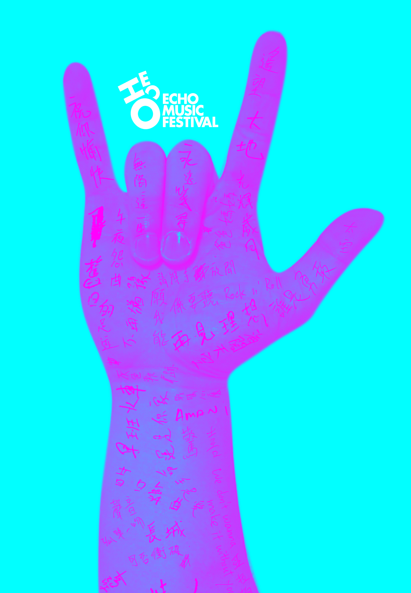

若要問華語音樂歷史上最有影響力的搖滾樂隊，相信答案非BEYOND莫屬。不知不覺，今年已是BEYOND成立的30週年，而今年的6月30日，將是BEYOND的靈魂人物一代音樂天才黃家駒逝世20年的紀念日。
在這個特別值得紀念的日子，紐約華語獨立音樂圈将在6月30號举办一场演唱会向BEYOND和家駒致敬。當晚多支活躍於紐約的樂團和獨立音樂人將演繹BEYOND的經典作品懷念家駒，向BEYOND致敬，用我們自己的聲音延續傳奇。
因為BEYOND的巨大影響力，當我們宣布即將在6月30號舉行致敬演唱會後，馬上得到本地多支華語獨立樂隊的響應，確定了演出的陣容。為了讓更多朋友，包括喜歡BEYOND但是沒有樂隊的朋友一起參與，我們在5月9號和6月12號舉辦了兩場Open Jam，将樂手和歌手混搭起來組成樂隊一起表演。我們很高興看到兩場Open Jam反映熱烈，除了本地的樂隊之外，一些平日忙於學業工作或沒有樂隊的朋友也因為BEYOND和家駒而拿起久違的樂器，一起加入演出的行列。兩場Open Jam的樂手和歌手，有學生也有在職人士，有在紐約土生土長的也有剛剛初來乍到的朋友，有華人也有日本人；總之，很多不同年代、不同背景、不同性格的人都因為BEYOND的音樂走到一起。
BEYOND音樂的影響力，也由此可見一斑。過去30年，受BEYOND影響的人不計其數，難以估計有所少人是因為聽了BEYOND的音樂而拿起結他、Bass和鼓棒。80和90年代的樂隊，不論專業的還是業餘的，又有誰不曾彈過《光輝歲月》、《真的愛你》。而堅持理想、不斷超越的BEYOND 精神，其影響亦早已超出搖滾文化。無論你從事何種工作，懷抱什麼理想，不管你是否追隨BEYOND，你都可以從家駒和BEYOND 的音樂和經歷中找到共鳴，從他們對理想的態度與信念裡得到啟發和激勵。家駒已經離開了20年，BEYOND解散也已經有7歌年頭，但是今天在Band房、電臺、電視節目、酒吧、Live House、音樂會，乃至一次次的社會運動中，都能聽到BEYOND 熟悉的旋律。我們對家駒的懷緬和向BEYOND致敬，不但是集體回憶，更是希望可以將BEYOND精神薪火相傳。我們相信，即使沒有親身經歷過那個年代的年輕樂迷，都會被BEYOND的音樂感染，都可以感受到他們的精神。如果你已是BEYOND的資深樂迷，我們的音樂會將是你欣賞本地華語樂隊演繹BEYOND金曲的好機會；如果你還沒有聽過BEYOND的音樂，我們更希望你可以來到我們的音樂會，感受BEYOND音樂的魅力，結交更多熱愛音樂的朋友。
“一生經過徬徨的掙扎，自信可改變未來，問誰又能做到”。家駒和BEYOND，已成為大中華音樂歷史上的不朽傳奇。傳奇的延續，有賴每一個喜歡BEYOND，熱愛音樂，熱愛為理想奮鬥的人。6月30號，期待你的加入，一起向家駒和BEYOND致敬，一起高呼Rock and Roll。
演出時間：2013年6月30日（黃家駒逝世20週年紀念日），下午5:00。 地點：Santos Party House，96 Lafayette Street, New York, New York 10013